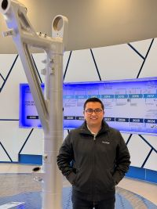

Luis Quezada | WDD 130

Hello!
I´m Luis Quezada, from Queretaro, México. I started Web and Computer programming certificate because I want to improve
my coding skills; currently I work as aeronautical engineer at a company that produces components for landing gears and I realized
the importance of computer science in my professional field as there are greats opportunities to automatize many process.